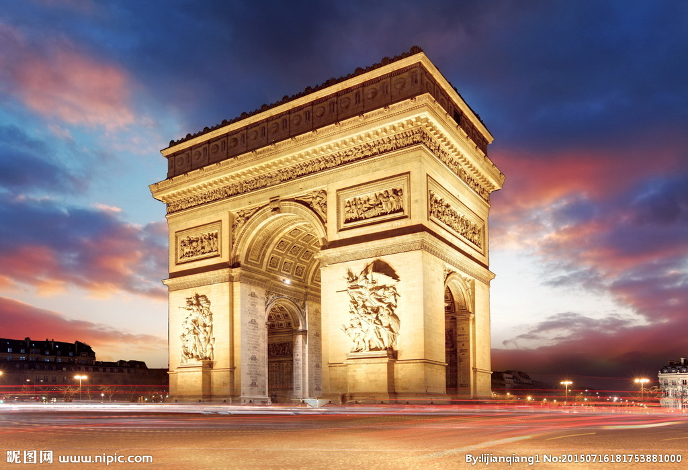

morly旅游网
一说法国，你肯定想到了是巴黎的铁塔，还有就是有很多时尚潮流的地方，想过去美丽的法国吗？
法国从中世纪末期开始成为欧洲大国之一，国力于19-20世纪时达到巅峰，建立了当时世界第二大殖民帝国，亦为20世纪人口最稠密的国家。
该国为欧洲国土面积第三大、西欧面积最大的国家，东与比利时、卢森堡、德国、瑞士、意大利接壤，南与西班牙、安道尔、摩纳哥接壤。
法国是一个高度发达的资本主义国家。欧洲四大经济体之一，其国民拥有较高的生活水平和良好的社会保障制度，是联合国安理会五大常任理事国之一，也是欧盟和北约创始会员国、申根公约和八国集团成员国，和欧洲大陆主要的政治实体之一。
巴黎
巴黎(法语:Paris) 是法兰西共和国的首都，法国最大城市，欧洲第二大城市，法国的政治、经济、文化、商业中心。巴黎是世界五大国际大都市之一，其余分别为纽约、伦敦、东京和香港 。
卢浮宫
卢浮宫始建于1204年，原是法国的王宫，居住过50位法国国王和王后，是法国文艺复兴时期最珍贵的建筑物之一，以收藏丰富的古典绘画和雕刻而闻名于世。
凡尔赛宫
凡尔赛宫(法文:Chateau de Versailles)位于法国巴黎西南郊外伊夫林省省会凡尔赛镇，是巴黎著名的宫殿之一，也是世界五大宫殿之一(北京故宫、法国凡尔赛宫、英国白金汉宫、美国白宫、俄罗斯克里姆林宫)。1979年被列为《世界文化遗产名录》。
香榭丽舍大道
香榭丽舍大街(爱丽舍田园大街)(法语Avenue des Champs-Élysées或les Champs-Élysées)，是巴黎城一条著名的大街。根据法国一个常用的说法，她被看作是巴黎最美丽的街道。
法国是世界主要发达国家之一，国内生产总值位居世界第五。法国是仅次 于美国的世界第二大农产品出口国，第三产业在法国经济中所占比重逐年上升。
法国的行政区划分为大区、省和市镇。省下设专区和县，但不是行政区域。县是司法和选举单位。法本土共划为22个大区，其下又分为96省，4个海外省（即1个海外大区辖有1个海外省）、4个海外领地和2个具有特殊地位的行政区。
内容整理至网络，如有侵权，请联系我们！1255394075@qq.com